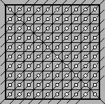

The centres of all unit squares are marked in a $10 \times 10$ chequered box $($100 points in total$)$. What is the smallest number of lines, that are not parallel to the sides of the square, that are needed to be drawn to erase all of the marked points?
Let’s draw all lines parallel to one of the diagonals of the square and containing more than one of the marked points – there are 17 such straight lines. Two corner points remain un-erased. They can be erased by drawing another straight line - another diagonal $($see the figure$)$. Let’s prove that we cannot have a smaller number of lines. Indeed, consider the centres of the unit squares located along the perimeter of the large square. It is clear that the line that is not parallel to the side of the square can erase no more than two such points, but there are 36 such points in total.
